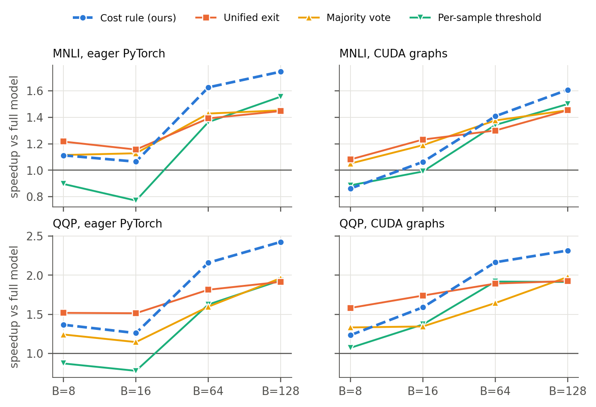
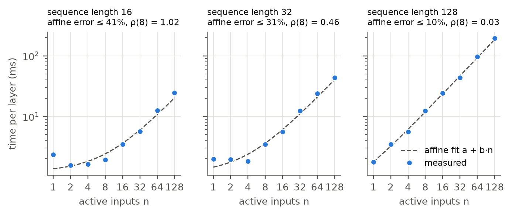
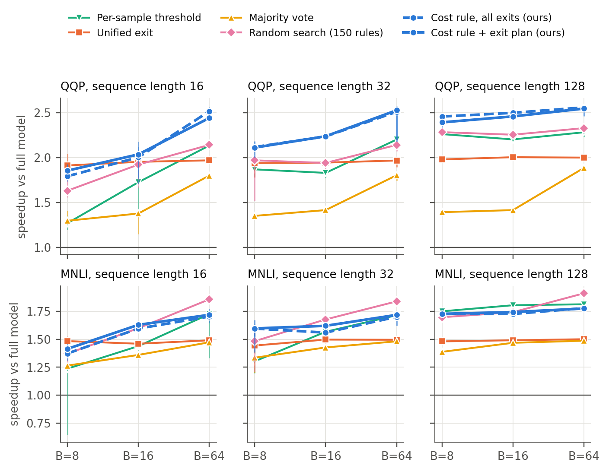
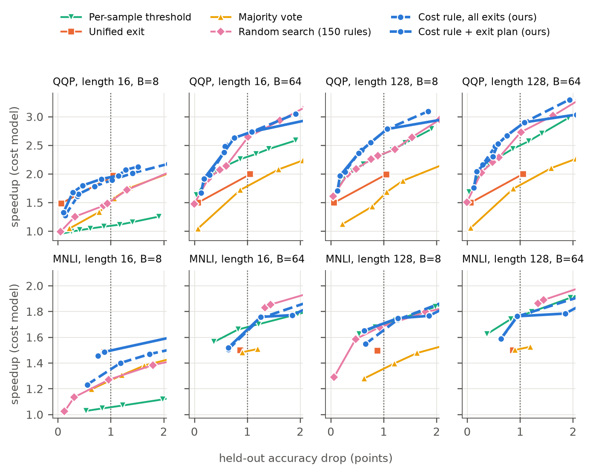

Cost-Derived Batch-Level Early Exit, with Bounded Damage from Slowdown Inputs
IE624 Course Project: Progress Report and Plan
Divyanshu Gupta (23B0306) Kushagra Gupta (23B3956) Neha Yadav (23B1807)
Course instructor: Prof. Manjesh K. Hanawal, IIT Bombay
13 November 2026; results in Section 5 updated 23 November 2026
Early-exit networks attach small classifiers (exits) after some layers, so an easy input can stop after a few layers instead of all of them [1, 2]. On a GPU, inputs are served in batches and a batch runs layer by layer for all its members together. A single hard input, a straggler, keeps the batch running to the last layer, so early exits save compute (FLOPs) but little wall-clock time. DREX, GEEP and Miao et al. report the same effect for batched BERT and LLM inference [3, 4, 5].
Cost model. One layer run on the n inputs still active costs c(n). Exits sit after layers l1 < … < lE = L. Only a subset is evaluated, the exit plan S = {s1 < … < sm = E}, and each evaluated exit costs h. Write di for the layer of the i-th evaluated exit (d0 = 0) and ni for the number of inputs active on the layers between evaluated exits i−1 and i. If the batch ends at its k-th evaluated exit, its latency is
Tbatch = Σi = 1…k [ (di − di−1) · c(ni) + h ]. (1)
Every layer up to the stopping depth is paid for, including layers whose exits are not in the plan; h is paid only for exits that are evaluated.
The first report assumed c(n) = a + b n and described the regime by ρ = a/(b n). When ρ is small (compute-bound), removing an exited input saves real time, so per-input exits work. When ρ is large (fixed-cost-bound), removing one input saves almost nothing and only stopping the whole batch saves time. That picture stands, but Section 4.3 shows the affine form is a poor fit on a second GPU, so the method now takes the measured c(n) directly.
Gap. Existing batch-level rules are heuristics: Consensus waits until every input is confident, and Majority and Greedy stop when half or one of them is [3, 5]. None is derived from the cost. Apparate chooses which exits to keep by their saving minus their overhead, but all inputs still run to the end of the model and accuracy is monitored without a guarantee [6]. Risk-controlled early exit gives a guarantee, but for per-input exits with no batch coupling [7].
Setting, and what we do not compare against. A batch is formed once, runs, and all its answers are returned; the quantity of interest is the latency of that batch. The other way to deal with stragglers is to rebatch: DREX regroups the inputs that continue past an exit into new batches with other requests waiting at that depth, and E3 splits the model at its exits so that each part runs at a constant batch size [3, 8]. Rebatching needs other requests to regroup with, so it applies under sustained load; it does not apply to a fixed offline batch, at low load, or when a batch has a latency deadline. The two are complementary, and this report has no rebatching baseline, which is a limitation. Stopping a batch also has a cost that rebatching does not: the inputs forced out are the hard ones, so the accuracy loss is not spread evenly. Section 4.5 reports the loss on hard inputs separately.
Security coupling. A slowdown attacker crafts inputs that never become confident [9, 10, 11]. In a synchronous batch, such an input delays every co-batched user, not only itself.
Research questions. Given the measured c(n): (1) when should a batch stop, and which exits are worth evaluating; (2) can the rule's parameters be set with a guarantee on accuracy, and learned online without labels; (3) can the damage from slowdown inputs be bounded without detecting them?
(a) Batch-stopping rule for a measured cost. The objective for one batch is its mean accuracy minus λ · Tbatch / F, with F the latency of the full model at the same batch size. λ has no unit: it is the accuracy we are willing to give up to save one full-model latency. Let gj(e→e′) be the expected accuracy gain of carrying input j from exit e to a later exit e′, estimated from a calibration table of P(correct at e′ | confidence at e). One input contributes 1/B of the batch's mean accuracy, which is why its gain is divided by B. Input j leaves alone if
gj(e→E) / B < λ · [c(n) − c(n−1)] · (L − le) / F, (2)
and the remaining inputs R stop together if no later evaluated exit is worth reaching:
∀ e′ ∈ S, e′ > e: (1/B) Σj ∈ R gj(e→e′) < λ · [(le′ − le) · c(|R|) + m(e, e′) · h] / F, (3)
where m(e, e′) counts the evaluated exits after e up to and including e′. An individual exit saves only the marginal cost c(n) − c(n−1); a collective stop saves all of c(|R|). For the affine cost these are b and a + b|R|, which recovers the rule of the first report and its threshold ratio of about 1/(1 + ρ). For a cost with a floor the marginal cost is zero below the knee, so the rule switches from per-input exits to whole-batch stopping inside a batch as it drains.
Two approximations are built in. Rule (2) prices the saving as if the input would otherwise run to layer L at today's marginal cost; when the batch later stops early the true saving is smaller, so (2) overestimates it. Rule (3) looks ahead to each later exit separately and uses only the current confidences. Lookahead rules of this kind are optimal in the monotone case of optimal stopping [12], which needs, among other conditions, gains that diminish with depth and a cost that is linear in n. We have not shown these conditions for a measured c(n), and the floor-shaped cost of Section 4.3 violates the linear one. We therefore do not claim that the rule is optimal; Section 5.8 states what we plan to prove.
(b) Exit plan. The first rule evaluated every exit and paid h for each. The plan S is now a choice: any subset of the intermediate exits, with the rule (2)–(3) run on that subset. With one exit kept the plan behaves like a unified exit; with all exits kept it is the earlier rule. The plan and λ are chosen together by replaying calibration traces under the measured c(n) and h; this needs no GPU time.
(c) Certified selection. The first report chose the fastest setting whose accuracy on the tuning split was within one point of the full model, and it then lost 0.8–2.5 points on held-out data. We now split the tuning data in two. On the first part each method's candidates are reduced to a path ordered from safest to fastest. On the second part the path is tested in order: for candidate θ, the drop in accuracy against the full model is computed per batch on K disjoint batches, Z1, …, ZK, and θ is certified if a one-sided t-test rejects "mean drop > α" at level δ. Testing stops at the first candidate that fails (fixed-sequence testing, as in Learn-then-Test [13]); the fastest certified candidate is used. We use α = 1 point and δ = 10%. Batches, not inputs, are the unit, because a batch-level rule couples the inputs of a batch. The test treats the K batch drops as independent draws from one distribution. That holds here because the batches are disjoint random groups from one split, and it means the guarantee covers inputs from the same distribution only. The t-test is also valid only for large K; a finite-sample bound is planned (Section 5.2). The certificate holds for the batch size and cost it was computed for, and recomputing it for a new deployment is a replay on the CPU.
(d) Label-free, partial-feedback bandit (secondary). The bandit replaces "correct" with "agrees with the full model", which upper-bounds the accuracy loss. Feedback is censored: once a batch stops, its deeper exits are never seen. Probe batches run to full depth with probability c t−1/3, the partial-monitoring rate for a revealing action [14]. Prior bandits for early exit tune per-input thresholds [15, 16].
(e) Bounded damage from slowdown inputs. The robust rule leaves the m largest gains out of the collective sum in (3). A trimmed sum is monotone, so for k ≤ m slowdown inputs K among clean inputs C, TSm(C) ≤ TSm(C ∪ K) ≤ TSm−k(C), hence depth(C ∪ K; m) ≤ depth(C; m − k) for every batch. The property is simple, and it bounds the damage without removing it: the batch can still run deeper as k grows.
| Model | Task | Exits after layer | Full-model acc. | Used in |
|---|---|---|---|---|
| RoBERTa-base [17] | MNLI [18] | 2, 4, …, 12 | 87.8% | server and local |
| RoBERTa-base | QQP [19] | 2, 4, …, 12 | 91.1% | server and local |
| ViT-B/16 [20] | CIFAR-100 [21] | 2, 4, …, 12 | 93.3% | server |
| Qwen2.5-1.5B, Llama-3.1-8B (frozen) [22, 23] | WikiText-103 [24] | 6 exits | 49.9%, 53.6% | server (negative result) |
Table 1: Models and tasks. Encoder backbones were fine-tuned jointly with their six exits.
| First report said | What the evidence shows | Measured on |
|---|---|---|
| The rule matches or beats the best heuristic in every cell | With CUDA graphs it is never the single fastest rule: unified exit wins at B ≤ 16 on text, a random search ties or wins at B ≥ 64. At B = 8 on MNLI it was the slowest rule (0.86×) | Server, CUDA graphs |
| 1.41×, 2.10×, 1.46× at B = 64 within one accuracy point | Those were simulated and selected on the held-out split. The real-GPU runs lost 0.8–2.5 points on held-out data | Server, eager |
| The simulator tracks the GPU within about 5% | Only at B ≥ 64 in eager mode; 15–32% off at B ≤ 16, and it overestimates in graph mode | Server, both modes |
| Every collective rule beats per-sample exits at B ≤ 16 | True on MNLI and QQP, not on CIFAR-100 | Server, ViT |
| Robustness costs no clean speedup | True at high ρ. At low ρ on CIFAR-100 the robust rule reaches 1.12× against 1.46× | Server, ViT |
| Tuned parameters carry over between deployments (assumed) | Tested and false for every method: in simulation the rule broke the one-point budget in 29–31% of transfers | Simulation, 3 tasks |
Table 2: Claims of the first report that were narrowed or withdrawn.

Figure 1: Real wall-clock speedup against the full model on an RTX A6000, held-out split. Left: eager PyTorch. Right: CUDA graphs. These runs used the old selection protocol and are not accuracy-matched (on MNLI the cost rule lost 1.8–2.5 points, unified exit 0.8–0.9); Section 5.1 reruns them with certified selection.
Figure 1 shows the server measurements. Three statements hold in both execution modes. Wait-for-all early exit, which keeps exited inputs in the batch, is slower than no early exit (0.78–0.97×). Per-sample exits fall below 1× at small batches on text (0.77–0.90× eager, 0.89× on MNLI with CUDA graphs). And the ordering of rules changes between B = 8 and B = 128. Compiling cuts the fixed per-layer cost about six-fold, and the cause of the small-batch loss changes with it: under CUDA graphs it is the exit heads, which alone cost 19% of the runtime at B = 8.

Figure 2: Measured time of one RoBERTa-base layer on a GTX 1650 (fp32) against the number of active inputs, at three sequence lengths, with the affine fit of the first report. Both axes are logarithmic.
| Sequence length | c(1) ms | c(8) ms | c(64) ms | h ms | ρ at n=8 | ρ at n=64 | Affine fit, largest error |
|---|---|---|---|---|---|---|---|
| 16 | 2.32 | 1.92 | 12.48 | 0.42 | 1.02 | 0.127 | 41% |
| 32 | 1.97 | 3.46 | 24.00 | 0.42 | 0.46 | 0.058 | 31% |
| 128 | 1.76 | 12.35 | 97.23 | 0.52 | 0.03 | 0.003 | 10% |
Table 3: Per-layer cost and exit-head cost on the GTX 1650.
A layer costs about 1.8 ms however few inputs are active, and then grows in proportion to the number of tokens in the batch. The knee is near 128 tokens: one input at length 128, four at length 32, eight at length 16. The affine model is off by up to 41% at short sequences. One GPU therefore covers both regimes: at length 128 it is compute-bound at every batch size, and at length 16 with B = 8 a per-input exit saves nothing. Policies below are chosen with the measured table. The gain in predicting speedups is small, because a speedup is a ratio and errors partly cancel: over the 126 policy runs timed in Section 4.4 the table's median error is 1.3% (largest 17%), against 2.2% (largest 15%) for the affine fit applied to the same decisions. The floor matters for the rule's decisions more than for the prediction.

Figure 3: Real wall-clock speedup on the GTX 1650 of the certified policy of each method, held-out inputs. Markers are the median over rounds; vertical bars are the range. Dashed blue: the cost rule with all exits; solid blue: with an exit plan.
| Policy | sequence length 16 | sequence length 32 | sequence length 128 | ||||||
|---|---|---|---|---|---|---|---|---|---|
| B=8 | B=16 | B=64 | B=8 | B=16 | B=64 | B=8 | B=16 | B=64 | |
| All heads, no exits | 0.93 | 0.96 | 0.99 | 0.96 | 0.97 | 0.99 | 0.99 | 0.99 | 1.00 |
| Per-sample threshold | 1.27 | 1.73 | 2.13 | 1.87 | 1.83 | 2.20 | 2.26 | 2.20 | 2.28 |
| Threshold + exit plan | 1.86* | 1.92* | 2.15 | 1.93* | 1.90 | 2.19 | 2.27 | 2.20 | 2.30 |
| Unified exit | 1.91* | 1.95* | 1.97* | 1.94* | 1.94* | 1.97* | 1.98* | 2.00* | 2.00* |
| Majority vote | 1.30 | 1.38 | 1.80 | 1.35 | 1.42 | 1.80 | 1.39 | 1.42 | 1.88 |
| Random search (150 rules) | 1.63 | 1.92 | 2.14 | 1.97 | 1.94 | 2.14 | 2.28 | 2.25 | 2.33 |
| Cost rule, all exits (ours) | 1.79 | 2.00 | 2.52 | 2.12 | 2.24 | 2.51 | 2.46 | 2.50 | 2.56 |
| Cost rule + exit plan (ours) | 1.85 | 2.04 | 2.44 | 2.11 | 2.24 | 2.53 | 2.39 | 2.46 | 2.55 |
Table 4: QQP, GTX 1650, measured speedup of each method's certified policy. Bold: fastest in the column. * held-out accuracy drop above one point.
| Policy | sequence length 16 | sequence length 32 | sequence length 128 | ||||||
|---|---|---|---|---|---|---|---|---|---|
| B=8 | B=16 | B=64 | B=8 | B=16 | B=64 | B=8 | B=16 | B=64 | |
| All heads, no exits | 0.93 | 0.96 | 0.98 | 0.95 | 0.98 | 0.99 | 0.98 | 0.98 | 1.00 |
| Per-sample threshold | 1.24* | 1.44* | 1.72* | 1.30* | 1.57* | 1.71* | 1.75* | 1.80* | 1.81* |
| Threshold + exit plan | 1.46 | 1.45 | 1.63 | 1.47 | 1.48 | 1.68 | 1.67 | 1.72 | 1.77 |
| Unified exit | 1.48 | 1.46 | 1.49 | 1.44 | 1.50 | 1.50 | 1.48 | 1.49 | 1.50 |
| Majority vote | 1.26* | 1.36 | 1.47 | 1.33* | 1.43 | 1.48 | 1.39* | 1.47 | 1.49 |
| Random search (150 rules) | 1.37 | 1.60* | 1.86* | 1.48 | 1.68* | 1.84* | 1.70 | 1.74 | 1.91* |
| Cost rule, all exits (ours) | 1.37* | 1.60* | 1.70* | 1.60* | 1.56* | 1.70* | 1.73* | 1.73* | 1.78 |
| Cost rule + exit plan (ours) | 1.41 | 1.63* | 1.72* | 1.60* | 1.62* | 1.72* | 1.73* | 1.74* | 1.77 |
Table 5: MNLI, same layout.
| Policy | Mean speed relative to the cell's best | Worst cell | Cells within 3% of the best | Cells over the 1-pt budget (held-out) | Largest held-out drop (pts) |
|---|---|---|---|---|---|
| Per-sample threshold | 0.884 | 0.664 | 2 / 18 | 9 / 18 | 1.23 |
| Threshold + exit plan | 0.912 | 0.848 | 2 / 18 | 3 / 18 | 1.05 |
| Unified exit | 0.859 | 0.779 | 2 / 18 | 9 / 18 | 1.05 |
| Majority vote | 0.738 | 0.566 | 0 / 18 | 3 / 18 | 1.20 |
| Random search (150 rules) | 0.934 | 0.848 | 5 / 18 | 5 / 18 | 1.44 |
| Cost rule, all exits (ours) | 0.970 | 0.917 | 11 / 18 | 8 / 18 | 1.31 |
| Cost rule + exit plan (ours) | 0.975 | 0.925 | 11 / 18 | 7 / 18 | 1.28 |
Table 6: Summary over 2 tasks × 3 batch sizes × 3 sequence lengths (18 timed cells; lengths 16 and 32 change the timing only, Section 3). Speed is relative to the fastest method of each cell. The methods are not at the same accuracy here: the fifth column differs by method, so this table is not a ranking. Section 4.5 compares speed at matched accuracy.
Tables 4–6 and Figure 3 give the measurements. What they show:

Figure 4: Held-out accuracy drop against speedup. Each point is the policy that certified selection returns for one accuracy target between 0.25 and 3 points, scored once on the held-out half. Up and to the left is better. The dotted line is the one-point budget. Speedups are computed from the measured cost table, not timed.
| Policy | sequence length 16 | sequence length 128 | ||||
|---|---|---|---|---|---|---|
| B=8 | B=16 | B=64 | B=8 | B=16 | B=64 | |
| Per-sample threshold | 1.08 | 1.48 | 2.26 | 2.30 | 2.32 | 2.44 |
| Threshold + exit plan | 1.88 | 1.89 | 2.16 | 2.26 | 2.29 | 2.35 |
| Unified exit | 1.49 | 1.49 | 1.50 | 1.50 | 1.50 | 1.50 |
| Majority vote | 1.34 | 1.45 | 1.72 | 1.43 | 1.51 | 1.74 |
| Random search (150 rules) | 1.48 | 1.89 | 2.14 | 2.32 | 2.36 | 2.29 |
| Cost rule, all exits (ours) | 1.78 | 2.13 | 2.63 | 2.55 | 2.48 | 2.67 |
| Cost rule + exit plan (ours) | 1.91 | 2.08 | 2.63 | 2.55 | 2.48 | 2.67 |
Table 7: QQP. Speedup of each method's fastest policy whose held-out drop is at most one point (cost table). Bold: best in the column. –: no such policy.
| Policy | sequence length 16 | sequence length 128 | ||||
|---|---|---|---|---|---|---|
| B=8 | B=16 | B=64 | B=8 | B=16 | B=64 | |
| Per-sample threshold | 1.05 | 1.30 | 1.66 | 1.68 | 1.68 | 1.74 |
| Threshold + exit plan | 1.48 | 1.49 | 1.63 | 1.67 | 1.68 | 1.72 |
| Unified exit | 1.49 | 1.49 | 1.50 | 1.50 | 1.50 | 1.50 |
| Majority vote | 1.20 | 1.41 | 1.48 | 1.28 | 1.47 | 1.50 |
| Random search (150 rules) | 1.27 | 1.38 | – | 1.68 | 1.69 | – |
| Cost rule, all exits (ours) | 1.23 | 1.48 | 1.51 | 1.55 | 1.58 | 1.76 |
| Cost rule + exit plan (ours) | 1.49 | 1.52 | 1.52 | 1.65 | – | 1.76 |
Table 8: MNLI, same layout.
| Policy | QQP, length 16 | QQP, length 128 | MNLI, length 16 | MNLI, length 128 | ||||||||
|---|---|---|---|---|---|---|---|---|---|---|---|---|
| all | hard 25% | other 75% | all | hard 25% | other 75% | all | hard 25% | other 75% | all | hard 25% | other 75% | |
| Per-sample threshold | 0.61 | 1.03 | 0.47 | 0.61 | 1.03 | 0.47 | 1.22 | 0.57 | 1.44 | 1.22 | 0.57 | 1.44 |
| Threshold + exit plan | 0.90 | 3.06 | 0.18 | 0.61 | 1.03 | 0.47 | 0.89 | 2.07 | 0.50 | 0.97 | 0.57 | 1.10 |
| Unified exit | 1.05 | 4.08 | 0.04 | 1.05 | 4.08 | 0.04 | 0.87 | 2.75 | 0.24 | 0.87 | 2.75 | 0.24 |
| Majority vote | 0.78 | 2.73 | 0.13 | 0.78 | 2.73 | 0.13 | 1.01 | 2.86 | 0.39 | 1.01 | 2.86 | 0.39 |
| Random search (150 rules) | 0.70 | 1.85 | 0.31 | 0.66 | 1.23 | 0.46 | 1.15 | 1.69 | 0.97 | 1.08 | 1.28 | 1.01 |
| Cost rule, all exits (ours) | 0.61 | 1.58 | 0.28 | 0.58 | 1.29 | 0.35 | 1.23 | 2.70 | 0.75 | 1.12 | 2.01 | 0.83 |
| Cost rule + exit plan (ours) | 0.74 | 2.04 | 0.31 | 0.57 | 1.27 | 0.33 | 1.12 | 2.59 | 0.63 | 1.12 | 2.01 | 0.83 |
Table 9: Held-out accuracy drop in points at the one-point target, mean over B = 8, 16, 64: all inputs, the hard quarter (lowest mean confidence over the five intermediate exits), and the rest. The rows of the threshold, the unified exit and majority vote are the same at both lengths because their certified parameters do not change with the cost table.
Tables 4–6 compare one policy per method, and those policies differ in accuracy. Here each method is run through certified selection at eight accuracy targets, which traces its accuracy–speed front on held-out data (Figure 4). Tables 7 and 8 read each front at a held-out drop of at most one point. Speedups in this section come from the measured cost table; over the timed runs of Section 4.4 the table's median error was 1.3% and its largest 17%.
| Task | B | Policy | Over budget, old protocol | Over budget, certified | Mean drop, old (pts) | Mean drop, certified (pts) | Speedup, old (cost model) | Speedup, certified (cost model) | Re-splits |
|---|---|---|---|---|---|---|---|---|---|
| MNLI | 8 | Majority vote | 33% | 10% | 0.87 | 0.43 | 1.36× | 1.23× | 30 |
| MNLI | 8 | Cost rule, all exits | 40% | 7% | 0.83 | 0.35 | 1.45× | 1.33× | 30 |
| MNLI | 8 | Per-sample threshold | 40% | 7% | 0.90 | 0.59 | 1.06× | 1.04× | 30 |
| MNLI | 64 | Majority vote | 40% | 13% | 0.88 | 0.43 | 1.52× | 1.29× | 30 |
| MNLI | 64 | Cost rule, all exits | 37% | 0% | 0.99 | 0.33 | 1.80× | 1.59× | 30 |
| MNLI | 64 | Per-sample threshold | 43% | 10% | 0.88 | 0.56 | 1.69× | 1.64× | 30 |
| QQP | 8 | Majority vote | 27% | 7% | 0.76 | 0.62 | 1.42× | 1.33× | 30 |
| QQP | 8 | Cost rule, all exits | 13% | 0% | 0.84 | 0.62 | 1.88× | 1.80× | 30 |
| QQP | 8 | Per-sample threshold | 3% | 0% | 0.85 | 0.72 | 1.09× | 1.07× | 30 |
| QQP | 64 | Majority vote | 3% | 3% | 0.74 | 0.56 | 1.75× | 1.56× | 30 |
| QQP | 64 | Cost rule, all exits | 13% | 3% | 0.73 | 0.64 | 2.60× | 2.54× | 30 |
| QQP | 64 | Per-sample threshold | 3% | 0% | 0.85 | 0.72 | 2.26× | 2.20× | 30 |
Table 10: Share of 30 random re-splits (20% tables and paths, 30% certification, 50% test) whose test-half accuracy drop exceeds one point, sequence length 16. Speedups here are from the cost model, not from GPU timing.
On random re-splits the certified procedure keeps the budget. For the cost rule the test half is over one point in 0–7% of re-splits, against 13–40% for the old protocol; the mean drop is 0.33–0.64 points. Eleven of the twelve rows are at or below the 10% target; majority vote on MNLI at B = 64 is at 13% (4 of 30), which 30 re-splits cannot separate from 10%. The price is speed: about 2–4% on QQP and 8–12% on MNLI for the cost rule. It is larger on MNLI, whose tuning half has about 4,900 examples against about 20,200 for QQP, so the test needs a wider margin there. The old protocol went over budget in 33–43% of MNLI re-splits for every method. Its mean drop on re-splits is 0.7–1.0 points, so this explains how often the earlier runs broke the budget; it does not explain the largest losses of the first report (up to 2.5 points). This also bears on Section 4.4: the fixed MNLI held-out half, where most certified policies exceeded one point, behaves like one of the unlucky splits and not like the average one. That reading is consistent with these numbers but is not proved by them, and a 30-re-split estimate of a 10% rate is coarse.
Against an oracle that knows the true tables, cumulative regret over 3,000 batches of 64 grows with log–log slope 0.49–0.65 on MNLI and QQP, while a CeeBERT-style per-input bandit's regret grows linearly. On the GPU the bandit uses no labels, costs 0.2–0.3 accuracy points, and reaches 1.26–1.77× at B = 64–128. Two cautions that the first report did not state: these are single runs fitted on a few points, and a slope below 2/3 does not "confirm" the T2/3 rate, which is a worst-case bound. Section 5.4 replaces them with ten seeds.
The bound depth(C ∪ K; m) ≤ depth(C; m − k) held in all 10,500 batches tested across five tasks, including real DeepSloth inputs on the ViT; the property test passes on the local machine as well (19 of 19 unit tests). Consensus loses its whole speedup to a single attacker. Victims' latency under our rule still rises with k, and the robust rule has a clean-speed cost in the low-ρ regime (Table 2).
Each item lists what we planned, what we expected and the fallback, as written on 13 November, followed by the result obtained by 23 November. All numbers are on held-out data with a one-point accuracy budget.
Rerun the 24 server settings (3 tasks × 4 batch sizes × eager and CUDA graphs) with the exit plan, the measured cost table and certified selection, on trained checkpoints, and report each as a timed accuracy–speed front like Figure 4. This is the main evidence still missing: trained weights, matched accuracy and a serving GPU in one run.
Expected: at a matched drop of one point, the rule ahead on QQP and within 10% of the best
baseline elsewhere, as in Section 4.5.
Fallback: if it is more than 10% behind at B ≤ 16 under CUDA graphs, report the plan as a partial fix and
state the settings where a unified exit should be used.
Result (16–22 Nov, eager only): run for QQP and MNLI at sequence
lengths 128 and 32 (Tables 11–12). CUDA graphs and CIFAR-100 (ViT) are not run yet. The CUDA-graph timing device is written and
checked on the CPU side (experiments/check_graph_device.py, scripts/run_server_a6000_graph.sh);
on 23–24 Nov no A6000 could start CUDA (one needs a reset, the idle ones fail to initialise), so the run is pending. On QQP at length 128 the cost rule with the exit plan is the fastest policy within budget at every
batch size, 1.95–2.46× at a held-out drop of 0.60–0.66 points, 8–14% ahead of
the best baseline within budget. At length 32 and B ≤ 16 the plan's policy is 0.05 points over
budget (so is the unified exit's), and the rule with all exits is the fastest policy within budget (1.30–1.33×). On MNLI
at length 128 the cost rule is over budget at every batch size (held-out drop 1.23–1.28
points), and so are the per-sample threshold and, at B ≥ 16, random search (1.06–1.48 points). The
fastest policies within budget there are the unified exit, the threshold with an exit plan and majority vote, at
1.46–1.66×. At length 32 and B ≤ 16 the plan's policy is within budget but 3–5% behind
the unified exit. Section 5.2 checks whether the MNLI overshoot is a property of this held-out half.
| Policy | QQP, length 128 | QQP, length 32 | ||||||
|---|---|---|---|---|---|---|---|---|
| B=8 | B=16 | B=64 | B=128 | B=8 | B=16 | B=64 | B=128 | |
| Per-sample threshold | 1.48 | 1.79 | 2.11 | 2.13 | 0.84 | 0.85 | 1.75 | 2.03 |
| Threshold + exit plan | 1.90* | 1.83 | 2.15 | 2.13 | 1.73* | 1.80* | 1.86 | 2.04 |
| Unified exit | 1.91* | 1.96* | 1.99* | 1.99* | 1.79* | 1.83* | 1.97* | 1.98* |
| Majority vote | 1.33 | 1.40 | 1.80 | 1.87 | 1.06 | 1.16 | 1.73 | 1.83 |
| Random search (150 rules) | 1.77 | 1.99 | 2.11 | 2.26 | 1.09 | 1.14 | 1.75 | 2.34 |
| Cost rule, all exits (ours) | 1.84 | 2.20 | 2.45 | 2.39 | 1.33 | 1.30 | 2.11 | 2.37 |
| Cost rule + exit plan (ours) | 1.95 | 2.20 | 2.46 | 2.44 | 1.68* | 1.76* | 2.11 | 2.30 |
Table 11: QQP, RTX A6000, eager PyTorch, trained RoBERTa-base checkpoint, real inputs: measured speedup of each method's certified policy on held-out inputs (2,048 per pass, 5 rounds, median paired speedup). Bold: fastest policy within the one-point budget in the column. * held-out drop above one point. results/local_time_qqp_a6000_T{128,32}.csv.
| Policy | MNLI, length 128 | MNLI, length 32 | ||||||
|---|---|---|---|---|---|---|---|---|
| B=8 | B=16 | B=64 | B=128 | B=8 | B=16 | B=64 | B=128 | |
| Per-sample threshold | 1.33* | 1.54* | 1.69* | 1.73* | 0.85* | 0.93* | 1.48* | 1.65* |
| Threshold + exit plan | 1.46 | 1.51 | 1.66 | 1.67* | 1.38 | 1.41 | 1.47 | 1.63* |
| Unified exit | 1.46 | 1.49 | 1.50 | 1.50 | 1.42 | 1.45 | 1.48 | 1.49 |
| Majority vote | 1.32* | 1.40 | 1.48 | 1.51 | 1.05* | 1.20 | 1.44 | 1.49 |
| Random search (150 rules) | 1.44 | 1.66* | 1.80* | 1.83* | 1.01 | 1.22* | 1.71* | 1.79* |
| Cost rule, all exits (ours) | 1.47* | 1.63* | 1.72* | 1.71* | 1.07 | 1.20* | 1.61* | 1.67* |
| Cost rule + exit plan (ours) | 1.54* | 1.65* | 1.71* | 1.72* | 1.35 | 1.40 | 1.65* | 1.69* |
Table 12: MNLI, same layout. results/local_time_mnli_a6000_T{128,32}.csv.
Pending: the CUDA-graph and CIFAR-100 (ViT) timings. The code and scripts are ready (scripts/run_server_a6000_graph.sh, scripts/run_server_a6000_vit.sh), and scripts/wait_gpu_then_graph.sh starts them as soon as an A6000 can initialise CUDA.
Replace the t-test with a finite-sample bound for bounded batch losses (Hoeffding–Bentkus), add the label-free version that controls disagreement with the full model, and repeat the re-split check on CIFAR-100. In the same runs, repeat the selection with 10%, 25% and 50% of the calibration data for the cost rule and for the random search, to test whether a rule with one parameter needs less data than a searched rule with three.
Expected: the same violation rates with a speed cost of a few percent.
Fallback: keep the t-test and state it as an asymptotic guarantee with the measured violation rate.
Result (Table 13): the t-test keeps the share of re-splits over budget at or below δ = 10% on average on all three tasks (1.3% QQP, 5.3% MNLI, 8.5% CIFAR-100, mean over five methods). On CIFAR-100 two methods are slightly above δ (per-sample threshold 13.3%, cost rule + plan 11.7%), which 120 cases per method cannot separate from 10% (the 95% interval is about ±5 points). The finite-sample bounds are too conservative at these sample sizes: for the accuracy drop, Hoeffding–Bentkus certifies no policy on any task, and the WSR bound certifies one in 49% of the QQP cases, at 1.50× against 2.31× with the t-test, and never on MNLI or CIFAR-100. The label-free version (disagreement with the full model) had no violations and costs speed: 1.88× against 2.31× on QQP. With 10% of the calibration data the cost rule falls from 2.30× to 1.83× on QQP, and random search loses about as much (2.13× → 1.71×), so the data-efficiency hypothesis (one parameter needs less data than three) is not supported. We therefore state the certificate as asymptotic, checked on re-splits.
The MNLI held-out half. On the fixed split (results/delta_check_mnli.csv) the cost rule, the
per-sample threshold and random search at B ≥ 16 all exceed the budget at δ = 10% (cost rule, with or without the
plan, and threshold: 1.21–1.28 points), while the unified exit and the threshold with an exit plan stay at or just
above it (0.86–1.01 points). At
δ = 2% the cost rule is within budget at B ≤ 64 (0.47–0.80 points) for 10–13% less
speed, but not at B = 128 (1.25). The split is random (traces/train_exit_heads.py),
and on 30 random re-splits at δ = 10% the cost rule is over budget in 7.5% of cases. Lowering δ to 5% cuts the re-split violation rate of the cost rule from 7.5% to 2.5% (with the plan 6.7% → 3.3%, random search 4.2% → 0.8%) for about 3% less speed (1.51× → 1.46×).
We read the fixed-split overshoot as an unlucky split, not a distribution shift; these numbers are consistent with that
reading and do not prove it.
| Task | t-test: share over budget, mean of 5 methods (worst) | Cost rule + plan, t-test (share over budget) | Same, WSR bound (share of cases with a certified policy) | Hoeffding–Bentkus | Cost rule + plan, label-free t-test (over budget) | Cost rule, all → 10% of calibration data (over budget) |
|---|---|---|---|---|---|---|
| QQP | 1.3% (2.5%, Random search) | 2.31× (1.7%) | 1.50× (49%) | never | 1.88× (0.0%) | 2.30× → 1.83× (2.5%) |
| MNLI | 5.3% (8.3%, Per-sample threshold) | 1.52× (6.7%) | 1.00× (0%) | never | 1.29× (0.0%) | 1.51× → 1.15× (7.5%) |
| CIFAR-100 | 8.5% (13.3%, Per-sample threshold) | 1.26× (11.7%) | 1.00× (0%) | never | 1.19× (0.0%) | 1.17× → 1.04× (9.2%) |
| MNLI, δ = 5% | 2.2% (4.2%, Per-sample threshold) | 1.47× (3.3%) | – | – | 1.27× (0.0%) | 1.46× → 1.11× (5.0%) |
Table 13: Certified selection on 30 random re-splits of the validation traces (20% tables and paths, 30% certification, 50% test) at B = 8, 16, 64, 128; share of the 120 cases per method whose test drop exceeds one point, and mean speedup from the cost table (not timed). δ = 10% unless stated. results/cert_check_{qqp,mnli,cifar100,mnli_d05}_summary.csv.
Replay an arrival trace in which the batch size moves between 1 and 128. Compare the rule, re-certified for each batch size from one set of calibration traces, against heuristics tuned at a single batch size and against heuristics re-tuned per batch size.
Expected: within 5% of per-batch-size re-tuned heuristics and ahead of heuristics tuned once.
Fallback: if tuned-once heuristics are as good, drop the load claim and keep the per-setting results.
Result (Table 14): passes on QQP: the cost rule tuned once reaches 2.32× against 2.11× for the best baseline re-tuned per batch size (random search). CIFAR-100 passes only with the exit plan (1.39× against 1.38×); with all exits the rule reaches 1.24× and is behind the best tuned-once baseline. MNLI fails on the budget: tuned once, the cost rule loses 1.48 points (with the plan 1.23), and δ = 5% does not change the policy tuned at B = 64.
| Task | Cost rule, tuned once at B = 64 (drop) | Cost rule + plan, tuned once (drop) | Best baseline re-tuned per batch size, within budget | Best baseline tuned once, within budget | Criterion |
|---|---|---|---|---|---|
| QQP | 2.32× (0.61) | 2.31× (0.62) | 2.11× (Random search, 0.68) | 2.10× (Random search once@8, 0.76) | pass |
| MNLI | 1.68× (1.48*) | 1.67× (1.23*) | 1.63× (Threshold + exit plan, 0.97) | 1.60× (Threshold + exit plan once@64, 0.98) | fail |
| MNLI, δ = 5% | 1.68× (1.48*) | 1.67× (1.23*) | 1.63× (Threshold + exit plan, 0.97) | 1.60× (Threshold + exit plan once@64, 0.98) | fail |
| CIFAR-100 | 1.24× (0.49) | 1.39× (0.75) | 1.38× (Threshold + exit plan, 0.68) | 1.33× (Per-sample threshold once@8, 0.81) | pass (plan only) |
Table 14: Fluctuating load: 3 arrival traces of 3,000 batches with B from 1 to 128, throughput speedup over all batches and accuracy drop over all served inputs (held-out, cost-table replay). Criterion of docs/DIRECTION.md: tuned once, within budget, within 5% of the best per-batch-size re-tuned baseline and ahead of every tuned-once baseline. * over the one-point budget. results/load_trace_{qqp,mnli,mnli_d05,cifar100}_levels.csv.
Ten seeds with confidence bands, a probe-rate ablation (t−1/2, t−1/3, constant), and a warm start from a small labelled set.
Expected: slopes between 0.5 and 0.7 where the oracle stops batches.
Fallback: report the measured slopes without a rate claim.
Result (ten seeds, B = 64, 3,000 batches; results/bandit_slopes_*_10seeds.csv):
the log–log slope of cumulative regret is 0.55–0.77 in the 5
settings where the bandit has regret to measure (95% intervals ±0.01–0.03);
in the remaining one (cifar100_dec_eager) cumulative regret stays below
0.06 and the slope means nothing. 4 of the 5 slopes are
in the 0.5–0.7 band we expected; a slope is not a proof of a rate. The t−1/3 probe schedule has
the lowest regret of the three schedules in 3 of these 5 settings; t−1/2 is
lower in the others. The warm start reduces regret by 2–12%.
Run the attack experiments where majority vote loses its clean speedup, and test an attacker that uses k > m inputs.
Expected: the bound holds; the clean-speed cost at low ρ is quantified per task.
Fallback: claim only the certificate.
Result (experiments/robust_bound.py --tune cert, 3 tasks × 4 cost
profiles, B = 64; results/robust_*_B64_cert.csv): the pathwise bound held in all 25,200 checked batches
(0 violations). Collective rules that count votes collapse: on the text tasks majority vote reaches
1.01–1.11× full-model latency at 16–32 attackers and consensus 0.97–1.10× at 8. The cost rule degrades
smoothly (victims' latency at 32 attackers 0.60–0.85× without trimming). Two findings narrow the claim: the
per-sample threshold is also robust (0.74–0.94× at 32 attackers, outside the
decoder-cost profile where it gives no speedup at all), and trimming buys little. At 32 attackers the trimmed rules
are not faster than the untrimmed one on the text tasks, and on CIFAR-100 trimming eight gains costs most of the clean
speedup (0.91–1.02× against 1.15–1.57×). On MNLI the certified cost rule is again over
budget on the held-out half (1.4–1.6 points).
Repeat Section 4.4 with the trained weights and real tokenised inputs, with batches padded to their own longest input, so that the short-sequence settings are measured on real short inputs.
Expected: the same ordering; timing does not depend on weight values.
Fallback: keep the replayed-decision results, labelled as such.
The first attempt failed for reasons we can now name: the backbone was frozen while its exits were trained (the same fault the encoders had before joint training), LayerSkip checkpoints are trained for drafting and not for returning the early answer, the test was run only at batch sizes 16 and 64, and the budget was one point of next-token accuracy on free text. The second attempt trains LoRA adapters and exit heads together with self-distillation from the final layer on Qwen2.5-1.5B, keeps a frozen baseline at the same budget, and sweeps batch sizes from 2 to 64. The training script and a runbook with pass and kill conditions for each step are written. Steps 0–2 have since been run; the result is below.
Key–value cache. A token that exits at layer l leaves the layers above it without keys and values, which later tokens attend to. Our decoding loop already handles this the way CALM does [27]: the exit hidden state is projected into the keys and values of every skipped layer. In the first attempt this cost about 2% of a layer per skipped layer. It is an approximation, and its effect on accuracy is part of what the exit accuracy measures.
Alternative considered. Instead of returning the early answer, the exits can be used as drafts that the remaining layers verify, as in LayerSkip's self-speculative decoding [26]. The output then equals the full model's greedy output, so weak exits cost speed and not accuracy. Batched speculation has the same straggler problem, because sequences in a batch accept different numbers of draft tokens, and the draft depth and length could be chosen per batch from the measured c(n). We have not started this. If the first step of the second attempt fails its exit-quality check, this is the direction we would take, with agreement with the full model's greedy output as the metric.
Expected: the 75%-depth exit within about 2 points of the full model (5.6 with a frozen
backbone), and a speedup at small batch sizes. This is a forecast.
Fallback: if the exit stays more than 4 points short, the LLM track ends as a negative result with its
cause.
Result, decoding (15–16 Nov): steps 0–2 of the runbook ran. Training
the exits with LoRA narrows the gap of frozen exits (Qwen2.5-1.5B, layer 24: 2.4 points below the fine-tuned
model against 4.0 frozen), but on free-text next-token prediction a batch-level rule has almost nothing to
adapt to: the gain of an adaptive depth over a fixed exit at a one-point budget falls from
12% at B = 1 to
0.2% at B = 64 (results/adaptivity_vs_batch.csv). Decoding stays a negative result (docs/PLAN_LLM.md §7).
Result, the LLM as a batched classifier (16–22 Nov, Tables 15–16): on Llama-3.1-8B
(compute-bound: ρ = 0.09 at B = 8) the cost rule is the fastest policy within budget at every batch size on both
tasks: QQP 3.48–3.66× against 3.11–3.50× (5–13% ahead), MNLI
2.97–3.14× against 2.56–2.66× (14–18% ahead), at held-out drops of
0.42–0.44 and 0.70–0.74
points. On Qwen2.5-1.5B QQP it is 5–16% ahead (2.18–3.02×). Qwen2.5-1.5B MNLI is the
exception: with all exits the rule is the slowest certified policy (1.10–1.19×); with the exit plan it
reaches 1.38–1.48× at a 0.2-point drop, ahead of the best baseline within budget at
B = 16, 128 (+1%, +5%) and behind at B = 8, 64
(−7%, −6%). The per-sample threshold is faster there (1.34–1.94×) but
over budget (1.21–1.23 points). Decisions are replayed from the recorded traces on the trained weights;
the device's predictions agree with the traces on 97–100% of inputs at every exit
(results/local_check_*_a6000_T128.json).
| Policy | Llama-3.1-8B | Qwen2.5-1.5B | ||||||
|---|---|---|---|---|---|---|---|---|
| B=8 | B=16 | B=64 | B=128 | B=8 | B=16 | B=64 | B=128 | |
| Per-sample threshold | 3.08 | 3.07 | 3.32 | 3.32 | 1.52 | 1.97 | 2.54 | 2.58 |
| Threshold + exit plan | 3.04 | 3.03 | 3.27 | 3.26 | 2.00 | 2.00 | 2.55 | 2.58 |
| Unified exit | 2.65 | 2.66 | 2.66 | 2.66 | 1.73 | 1.74 | 1.75 | 1.75 |
| Majority vote | 1.94 | 1.64 | 1.81 | 1.66 | 1.45 | 1.60 | 1.90 | 1.86 |
| Random search (150 rules) | 3.13 | 3.11 | 3.50 | 3.43 | 2.02* | 2.41 | 2.56 | 2.60 |
| Cost rule, all exits (ours) | 3.48 | 3.52 | 3.66 | 3.62 | 2.15 | 2.52 | 2.96 | 3.02 |
| Cost rule + exit plan (ours) | 3.48 | 3.49 | 3.64 | 3.62 | 2.18 | 2.52 | 2.96 | 3.01 |
Table 15: LLMs as batched classifiers, QQP: LoRA + one linear exit head per exit on the last prompt token (prefill only, prompts padded to 128 tokens, bf16, eager), RTX A6000, trained weights and real prompts, held-out, 2,048 inputs per pass, 5 rounds. Layout as Table 11. results/local_time_qqp_{llama,qwen}_a6000_T128.csv.
| Policy | Llama-3.1-8B | Qwen2.5-1.5B | ||||||
|---|---|---|---|---|---|---|---|---|
| B=8 | B=16 | B=64 | B=128 | B=8 | B=16 | B=64 | B=128 | |
| Per-sample threshold | 2.38 | 2.44* | 2.62 | 2.61 | 1.34* | 1.65* | 1.89* | 1.94* |
| Threshold + exit plan | 2.56 | 2.47 | 2.53 | 2.53 | 1.70* | 1.72* | 1.73* | 1.72* |
| Unified exit | 2.64* | 2.66* | 2.66* | 2.66* | 1.39 | 1.40 | 1.40 | 1.40 |
| Majority vote | 1.62 | 1.72 | 2.75* | 2.72* | 1.29 | – | 1.54 | – |
| Random search (150 rules) | 2.40 | 2.66 | 2.66 | 2.66 | 1.48 | 1.37 | – | 1.33 |
| Cost rule, all exits (ours) | 2.97 | 3.05 | 3.12 | 3.14 | 1.10 | 1.16 | 1.18 | 1.19 |
| Cost rule + exit plan (ours) | 2.97 | 3.04 | 3.12 | 3.14 | 1.38 | 1.41 | 1.44 | 1.48 |
Table 16: MNLI, same layout. results/local_time_mnli_{llama,qwen}_a6000_T128.csv.
State and prove when the lookahead rule is optimal: the monotone case [12] for an affine cost with gains that diminish with depth. For a general non-decreasing c(n) we aim only at the regime switch at the knee of a floor-shaped cost, and at a bound on what rule (2) loses by overestimating its saving.
Expected: a proof for the affine case and a counterexample or a bound for the floor case.
Fallback: clearly labelled proof sketches. The word "optimal" stays out of the title unless the proof is complete.
Result (24 Nov): proofs and exact checks in theory/THEORY_58.md.
All statements assume exact calibration, inputs that are independent given their confidences, and expected gains
that are not negative (which the clipping in the rule imposes). (i) Collective stop. With the active set fixed,
the latency of each segment is deterministic, and rule (3) is the lookahead to every later exit. In the monotone case
this lookahead equals the one-step lookahead and is optimal, for any cost c(n): the cost shape
matters only through individual exits. (ii) Affine cost, the two limits. At ρ = 0 the problem splits into one
stopping problem per input, and at ρ = ∞ it is pure collective stopping. At ρ = 0 rule (2) is not the optimal
per-input rule: it compares only with the last exit, so in the monotone case it never leaves later than the optimum
but can leave earlier. Its expected loss is below λb(L − dτ+1)/F, the cost of the
layers after the next exit. The optimal per-input rule tests every later exit, as (3) does. (iii) Floor
cost. Below the knee an individual exit saves nothing and can only lose accuracy, so there the rule is optimal in
the monotone case; this proves the regime switch inside a draining batch. Above the knee, rule (2) prices every
leaving input at today's marginal cost and over-counts the saving by b·max(0, k − (n −
nk)) per layer when k inputs leave together. An instance with 8 easy inputs and one hard
one attains the bound (-6.99 in units of λb(L − de)/F). Leaving one at a time, each priced at its own marginal cost,
fixes it (+0.001). Exact checks (dynamic programming on small instances,
results/theory58_checks.json): rule (3) is optimal in all 210 monotone instances and
suboptimal in 17 of 190 non-monotone ones. The all-exits per-input rule is optimal in all
301 monotone single-input instances, while rule (2) is suboptimal in 165, never late, and within the
bound in all 31 instances where it applies. For 0 < ρ < ∞ there is no theorem: in the joint problem
with 150 instances of B = 3, rules (2)+(3) are optimal in 122 (affine cost) and
109 (floor cost), with mean gaps in the objective of 0.4 and 0.9
points. On real traces (QQP and MNLI; GTX 1650 and A6000 cost tables; B = 8–128; 40 settings;
results/theory58_front_*.csv) the all-exits rule (2) is +2.7% faster at the
one-point certified target, but it spends more of the budget (held-out drop 0.99 vs
0.91 points). At matched held-out drop (≤ 1 point) it is -1.4% on average
(13 wins, 21 losses): re-tuning λ absorbs the difference, so
the implemented rule is kept. Not proved: optimality for 0 < ρ < ∞ and above the knee, and whether the real
calibration tables are monotone. "Optimal" stays out of the title.
| Dates | Work |
|---|---|
| 13–15 Nov | Local timing, matched-accuracy fronts and re-split check (done, Sections 4.4–4.6); finite-sample certificate; label-free certificate |
| 16–18 Nov | Server rerun of all 24 settings with the exit plan and certified selection |
| 19–21 Nov | Fluctuating-load experiment |
| 22–23 Nov | Bandit with ten seeds; robustness at low ρ |
| 24–26 Nov | Theory write-up, final figures, presentation |
| When a server GPU is free | LLM second attempt, first three steps of the runbook (about 4 GPU-hours, estimate). It does not take time from the server rerun |
| Claim | Status | Evidence, and what is still missing |
|---|---|---|
| Which rule is fastest flips with batch size, execution mode and sequence length | HOLDS on two GPUs | Sections 4.2, 4.4, 5.1. CUDA-graph rerun on the A6000 still missing |
| The per-layer cost is a floor plus a linear part, not affine | HOLDS on the GTX 1650; Qwen2.5-1.5B on the A6000 has a floor up to B = 4 | Section 4.3; results/local_cost_a6000_T128_qwen.json |
| Re-certified per setting (a CPU replay), the rule is near the best certified method everywhere | HOLDS on QQP (RoBERTa, Qwen2.5-1.5B, Llama-3.1-8B) and Llama MNLI, strongest on the LLM classifiers (5–18% ahead on Llama). Exceptions: RoBERTa MNLI (over budget on the fixed split) and Qwen MNLI (needs the plan; −7%, +1%, −6%, +5% at B = 8, 16, 64, 128) | Timed A6000 runs, Tables 11–12 and 15–16. CUDA graphs and CIFAR-100 on the A6000 still missing |
| Stopping a batch spreads the accuracy loss evenly | FALSE loss lands on hard inputs | Table 9. A per-input floor on the loss is not planned before 26 Nov |
| The exit plan fixes the small-batch weakness | PARTLY needed on Qwen MNLI and CIFAR-100 under load; at length 32 and B ≤ 16 on QQP its policy is just over budget | Tables 11, 14, 16. Under CUDA graphs, where heads cost 19%, not yet measured |
| Certified selection keeps the accuracy budget | WEAKENED to an asymptotic certificate (t-test), within δ on average over 30 re-splits on all three tasks | Table 13: finite-sample bounds (Hoeffding–Bentkus, WSR) are too conservative at these sample sizes; the label-free version costs speed |
| The MNLI held-out overshoot is an unlucky split | PARTLY consistent: the re-split violation rate is within δ, and δ = 2% fixes B ≤ 64 at about 10% less speed | Section 5.2; not proved, one fixed split |
| Under fluctuating load, one tuning of the rule is enough | HOLDS on QQP; CIFAR-100 only with the plan; FAILS on MNLI (budget) | Table 14 (cost-table replay, not timed) |
| The label-free bandit learns the rule (secondary) | HOLDS ten seeds, sublinear regret | Section 5.4; slopes are not a rate proof |
| The rule is optimal | PARTLY proved in the monotone case for the collective stop (any cost), at the two limits of the affine cost and below the knee of the floor cost; rule (2) is not the optimal per-input rule (never late, loss bounded) | Section 5.8, theory/THEORY_58.md. Open for 0 < ρ < ∞ and above the knee; monotonicity of the real tables not checked; the fix does not help at matched accuracy |
| Bounded damage from slowdown inputs | HOLDS 0 violations of the bound; majority and consensus collapse. The per-sample threshold is also robust, and trimming buys little | Section 5.5 |
| Benefit on LLMs | FAILED for decoding; HOLDS for classification on Llama-3.1-8B (both tasks) and Qwen2.5-1.5B QQP, mixed on Qwen MNLI | Section 5.7, Tables 15–16 |
By 26 November we expect a timed, accuracy-matched comparison on two GPUs showing where the cost-derived rule is ahead of existing rules and where it is not; a selection procedure with a stated guarantee on the accuracy drop; and, as secondary results, a label-free bandit with error bars and the bounded-damage property. We do not expect a rule that is fastest everywhere. A positive result on LLM decoders depends on the second attempt (5.7) and is not assumed. For a conference submission the evidence would still need more models, trained checkpoints timed on both GPUs, and the load experiment; with those, the work fits a systems-leaning venue.
[1] J. Xin, R. Tang, J. Lee, Y. Yu, J. Lin. DeeBERT: Dynamic Early Exiting for Accelerating BERT Inference. ACL 2020.
[2] W. Zhou, C. Xu, T. Ge, J. McAuley, K. Xu, F. Wei. BERT Loses Patience: Fast and Robust Inference with Early Exit. NeurIPS 2020.
[3] X. Liu et al. Dynamic Rebatching for Efficient Early-Exit Inference with DREX. arXiv:2512.15705, 2025.
[4] L. Li et al. Accelerating BERT Inference with GPU-Efficient Exit Prediction. Frontiers of Computer Science 18(3), 2024.
[5] R. Miao, Y. Yan, X. Yao, T. Yang. An Efficient Inference Framework for Early-exit Large Language Models. arXiv:2407.20272, 2024.
[6] Y. Dai, R. Pan, A. Iyer, K. Li, R. Netravali. Apparate: Rethinking Early Exits to Tame Latency-Throughput Tensions in ML Serving. SOSP 2024.
[7] M. Jazbec, A. Timans, et al. Fast yet Safe: Early-Exiting with Risk Control. NeurIPS 2024.
[8] A. Iyer et al. Improving DNN Inference Throughput Using Practical, Per-Input Compute Adaptation (E3). SOSP 2024.
[9] S. Hong, Y. Kaya, I.-V. Modoranu, T. Dumitraş. A Panda? No, It's a Sloth: Slowdown Attacks on Adaptive Multi-Exit Neural Network Inference. ICLR 2021.
[10] Z. Coalson, G. Ritter, R. Bobba, S. Hong. BERT Lost Patience Won't Be Robust to Adversarial Slowdown. NeurIPS 2023.
[11] Y. Chen et al. Dynamic Transformers Provide a False Sense of Efficiency. ACL 2023.
[12] Y. S. Chow, H. Robbins, D. Siegmund. Great Expectations: The Theory of Optimal Stopping. Houghton Mifflin, 1971.
[13] A. N. Angelopoulos, S. Bates, E. J. Candès, M. I. Jordan, L. Lei. Learn then Test: Calibrating Predictive Algorithms to Achieve Risk Control. arXiv:2110.01052, 2021.
[14] N. Cesa-Bianchi, G. Lugosi, G. Stoltz. Minimizing Regret with Label Efficient Prediction. IEEE Trans. Information Theory 51(6), 2005.
[15] D. J. Bajpai, M. K. Hanawal. CeeBERT: Cross-Domain Inference in Early Exit BERT. Findings of ACL 2024.
[16] R. G. Pacheco et al. UCBEE: A Multi-Armed Bandit Approach for Early-Exit in Neural Networks. IEEE Trans. Network and Service Management, 2024.
[17] Y. Liu et al. RoBERTa: A Robustly Optimized BERT Pretraining Approach. arXiv:1907.11692, 2019.
[18] A. Williams, N. Nangia, S. Bowman. A Broad-Coverage Challenge Corpus for Sentence Understanding through Inference. NAACL 2018.
[19] A. Wang et al. GLUE: A Multi-Task Benchmark and Analysis Platform for Natural Language Understanding. ICLR 2019.
[20] A. Dosovitskiy et al. An Image Is Worth 16x16 Words: Transformers for Image Recognition at Scale. ICLR 2021.
[21] A. Krizhevsky. Learning Multiple Layers of Features from Tiny Images. Tech. report, University of Toronto, 2009.
[22] Qwen Team. Qwen2.5 Technical Report. arXiv:2412.15115, 2024.
[23] Llama Team, Meta AI. The Llama 3 Herd of Models. arXiv:2407.21783, 2024.
[24] S. Merity, C. Xiong, J. Bradbury, R. Socher. Pointer Sentinel Mixture Models. ICLR 2017.
[25] L. Del Corro et al. SkipDecode: Autoregressive Skip Decoding with Batching and Caching for Efficient LLM Inference. arXiv:2307.02628, 2023.
[26] M. Elhoushi et al. LayerSkip: Enabling Early Exit Inference and Self-Speculative Decoding. ACL 2024.
[27] T. Schuster et al. Confident Adaptive Language Modeling. NeurIPS 2022.